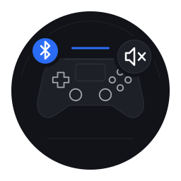
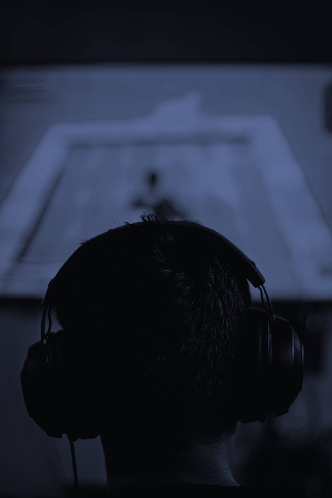
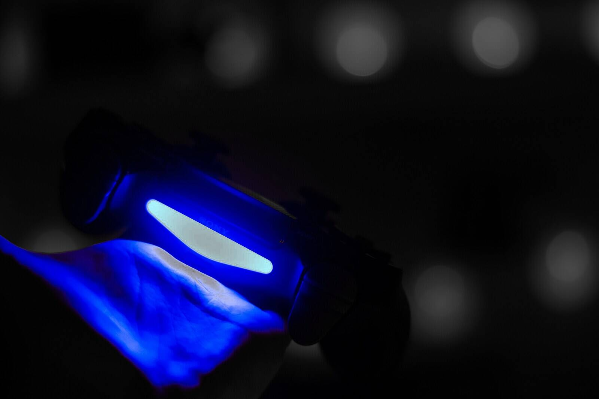

O som do jogo na TV.
E no controle.
O DS4 Companion manda o áudio do RPCS3 em paralelo para o alto-falante do DualShock 4, sem trocar a saída que você usa. Volume em dB com teto de segurança, força da vibração e cor da luz, num app nativo para Arch Linux.
Em desenvolvimento. Hoje funciona como script; o app chega na v0.2.
- Barra de luz cor do LED, por jogador
- Micro-USB som no controle só pelo cabo
Status
DualShock 4
Conectado por cabo USB
80%
Áudio
Livre
Na prévia o apito toca no seu computador, no volume escolhido.

Som no controle precisa do cabo
Por Bluetooth o Linux ainda não envia áudio para o DualShock 4. Vibração, luz e bateria continuam funcionando.
Vibração
Teste de no máximo 2 s. Com um controle ligado ao navegador, ele vibra de verdade.
Luz planejado
Cor da barra de luz. A faixa do cartão e a foto acima mostram a cor do LED.

Em paralelo,
nunca no lugar.
O juiz apita no jogo e apita na TV e no controle. O app não cria saída virtual e não mexe na saída padrão: ele liga as portas do RPCS3 também ao DualShock 4 no PipeWire. A latência é praticamente zero.
O WirePlumber move o som principal. O link do controle fica intacto.
O volume tem teto.
O alto-falante do controle tem cerca de 0,5 W. Acima de 0 dB, o volume nativo do hardware, o som passa a clipar e pode danificar a peça. Por isso o volume é em dB, e o app não passa do teto sem você confirmar.
- Livre até −6 dB
- Alto −6 a 0 dB, com aviso
- Acima do limite só com confirmação
Acima de 0 dB o som distorce e pode danificar o alto-falante.
Arraste ou use as setas do teclado. O preenchimento fica branco acima do limite: o estado não depende de cor, vem com texto e ícone.

Cabo ou Bluetooth, sem surpresa.
O app percebe a troca sozinho e mostra o que funciona em cada caso. Por Bluetooth o DualShock 4 não usa o perfil de áudio comum, e nem o kernel nem o PipeWire implementam o formato dele. A gente diz isso na tela, em vez de esconder.
| Recurso | Cabo USB | Bluetooth |
|---|---|---|
| Som do jogo no controle | sim | não pelo Linux, hoje |
| Volume em dB com teto | sim | — |
| Força da vibração | sim | sim |
| Cor da barra de luz planejado | sim | sim |
| Bateria | sim | sim |
Feito para o Arch, do jeito do Arch.
- Nativo
- Python, GTK4 e libadwaita. Só pacotes do repositório
extra. Sem Flatpak, sem Electron. - Sem root
- Interface, serviço e CLI rodam como seu usuário. Root só na instalação, para a regra udev.
- Nada sai da máquina
- Sem telemetria e sem rede. O serviço fala com a interface por D-Bus de sessão.
- Também no terminal
ds4ctl volume -6,ds4ctl test-rumble both: a mesma API da interface, para scripts.
Onde o projeto está.
- Fase 0 Scripts: vibração no RPCS3 e áudio em paralelo por cabo feito
-
v0.1
Serviço
ds4-companionde CLIds4ctlem andamento - v0.2 Interface gráfica, cor da luz e telas de estado próximo
- v0.3 Pacote, AUR e instalação por um comando próximo
- v0.4+ Limitador, perfis por jogo, DualSense depois
Um comando, quando sair.
O pacote chega na v0.3. Vai ser assim: um comando do pacman, e depois desconectar e
reconectar o controle para a regra udev valer.
sudo pacman -U https://github.com/luizfelipe-pacifico/ds4-companion/releases/latest/download/ds4-companion.pkg.tar.zst
Também pelo AUR (yay -S ds4-companion), pelo install.sh das releases ou com makepkg -si. Requer Arch Linux com GNOME, PipeWire e o RPCS3.